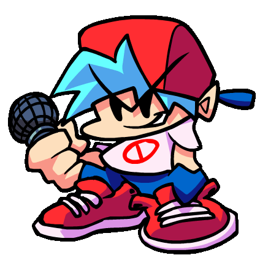
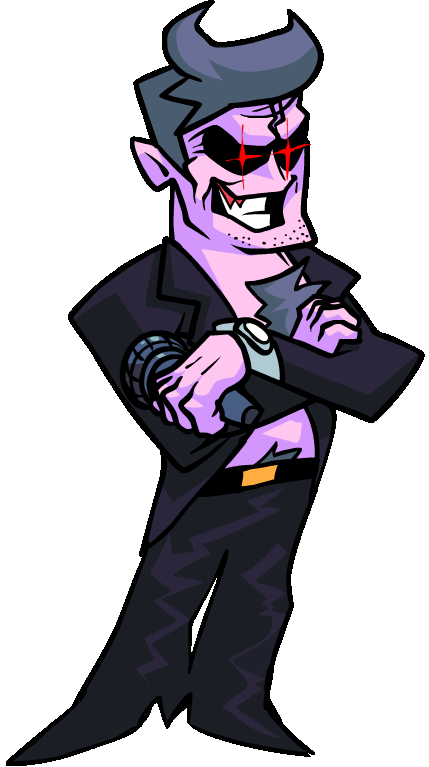
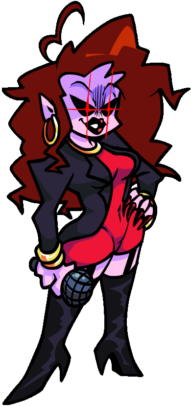
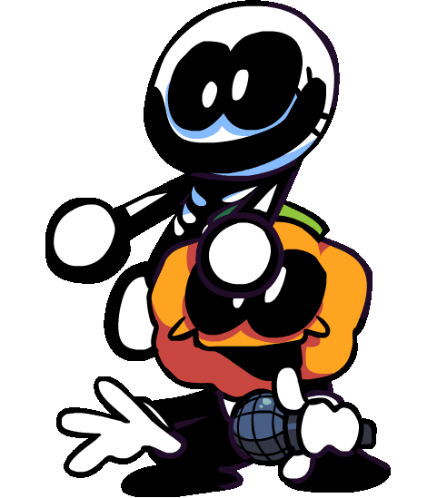
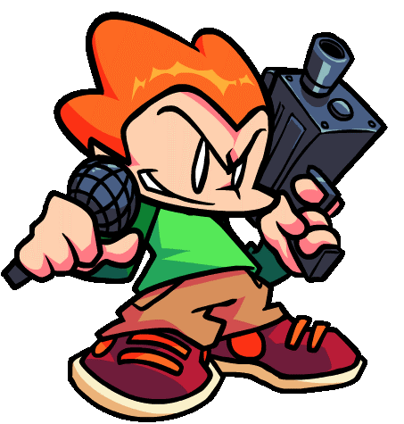
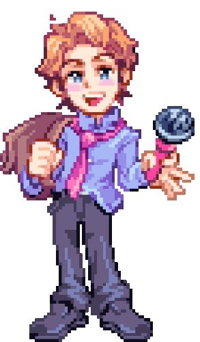
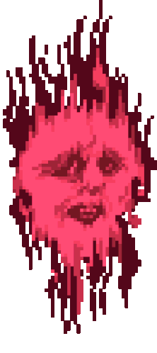
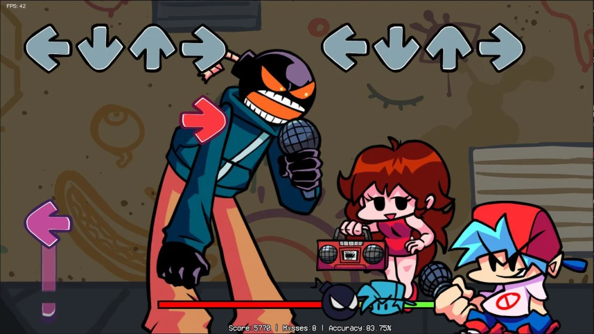

Mi az a Friday Night Funkin?
A Friday Night Funkin' egy nyílt forráskódú donationware ritmusjáték, amelyet először 2020-ban adtak ki. A játékot egy négy Newgrounds felhasználóból álló csapat fejlesztette ki, Cameron Taylor "ninjamuffin99", David Brown "PhantomArcade", Isaac Garcia "Kawai Sprite" és evilsk8r
A történet Boyfriend-ről a 19 éves rapperről szól aki csajozik Girlfriend-el. Ám ezt Girlfriend szülei nem tűri jó szemmel ezért Boyfriend-nek be kell bizonyítania rap csatákban hogy meghódíthatja -e szeretett barátnője szívét

A játék főhőse.Egy 19 éves kék hajú srác akinek rap tudásával be kell bizonyítania hogy randizhasson a barátnőjével

Egy ex-rocksztár énekes aki egy démon ő girlfriend apukája és nagyon utálja boyfriendet
Egy dögös leányzó aki Boyfriend barátnője és szintén egy démon,habár arra utaló jelek kívűlről nem látható illetve Daddy Dearest és Mommy Mearest lánya.

Daddy Dearest felesége aki egy pop énekes és Girlfriend anyja

Kettő gyerek akik egy csontváznak és töknek öltöztek be,Sr Pelo híres animációjáról a "Spooky Month"-ról mintázták

Egy narancssárga hajú srác akinél mindig egy fegyver van illetve ő volt Boyfriend ex-pasija. Pico eredetileg egy 1999-ben megjelent játékban a Pico's School-ban jelent meg

Egy citrom fejű és ijesztő lény akinek minden vágya hogy megegye Girlfriend-et.

Egy Playstation 1-es randiszimulátor karaktere aki a tipikus anime karakterek kinézetét örökli.

Egy piros szinű és furcsa arccal rendelkező lebegő izé aki Senpai testéből tör ki illetve ő mondta el hogy Daddy Dearest zárta be a játékba

2021 áprilisában a készítők elindítottak egy Kickstarter projektet Friday Night Funkin' The Full-Ass game néven.Ott lehetett adományozni bizonyos pénz összeget amivel támogatni lehetett a készítőket és még jutalmakat is lehetett kapni összegtől függetlenül.A projekt összesen 2millió dollárt szerzett.A teljes játék 2022 április 30.án jelent volna meg de elcsúztatták így végleges megjelenése még ismeretlen.

A játék nyiltforráskódú megjelenésének köszönhetően az emberek be tudják kódolni saját tartalmukat pl:karakterek,zenék,animációk stb... így rengeteg ranjongók által készült mod jelent meg (A képen az egyik leghíresebb mod a VS Whitty mod látható)
Szeretnél játszani a játékkal? Ingyenesen játszhatsz ezeken a linkeken (A Week 7es verzió még csak newgrounds-on érhető el):Itch.io változat